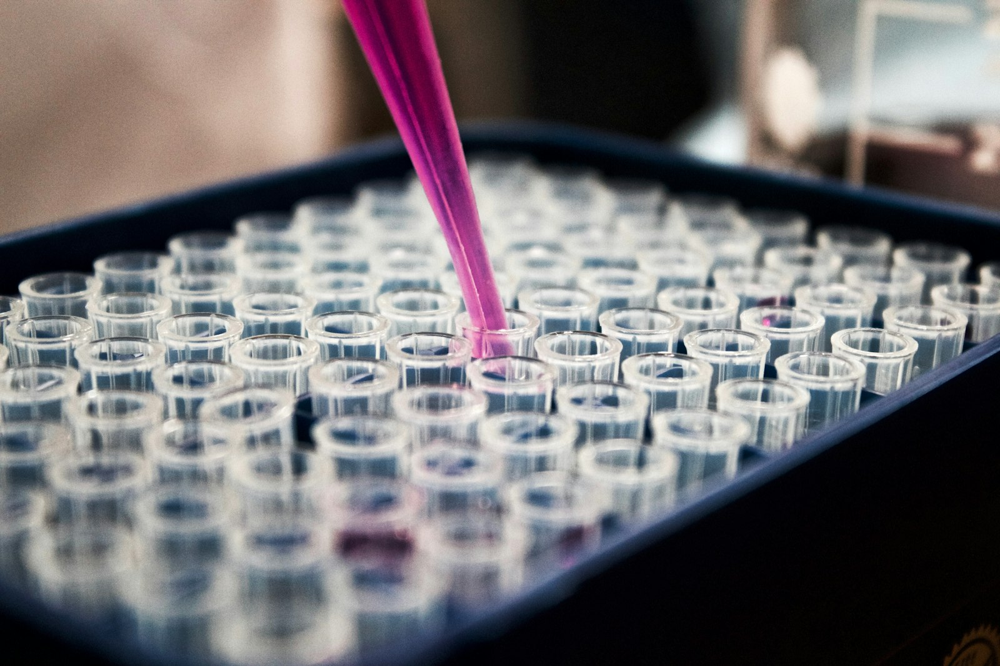

登記・公開情報と一致する内容です。資本金とラボ設備投資は別の数字です。

設計候補の生成、性質予測、能動学習による選抜、実験、データ取り込みを反復する運用です。当社はこれを自社ラボで回し、相談・共同研究でも同じ視点で伴走します。
設計・予測・選抜・実験データのフィードバックを一連の流れとして捉え、自社ラボ運用に活かします。
文献や SOP と実際の操作がずれないよう、手順検索と出典突合を製品として持っています。
見て、掴んで、置き直す。失敗したらやり直す空間認識を、自動化の土台として積み上げています。
変遷を読む ／ 製品を見る